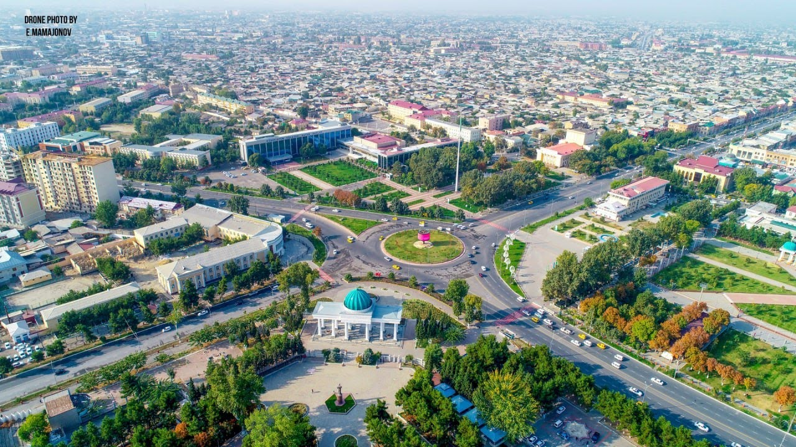

Andijan (also spelled Andijon) is the fourth-largest city in Uzbekistan and the administrative, economic, and cultural center of the Andijan Region. Situated in the easternmost corner of the Fergana Valley, it lies approximately 450 km east of Tashkent near the Kyrgyz border.Key Information1. History & HeritageAncient Origins: Dating back over 2,500 years, Andijan is one of the oldest cities in the Fergana Valley. It was a key stop on the Silk Road and was historically linked to the capital of the ancient Dayuan (Dawan) kingdom.Birthplace of Babur: The city is most famous as the birthplace of Zahir-ud-Din Muhammad Babur (born 1483), a descendant of Timur who went on to found the Mughal Empire in India.The 1902 Earthquake: Much of the ancient architectural heritage was destroyed by a devastating earthquake in 1902, after which the city was largely rebuilt.2. Geography & ClimateLocation: Located at an elevation of around 500 meters above sea level, surrounded by the foothills of the Tian Shan and Pamir mountain ranges.Demographics: The Andijan Region is the most densely populated province in Uzbekistan.Climate: Features a continental climate with warm, dry summers and relatively mild winters.3. Economy & IndustryAutomotive & Manufacturing: The region is a major hub for Uzbekistan's automotive industry, home to large manufacturing facilities (such as the UzAuto Motors assembly plant in nearby Asaka).Agriculture & Textiles: Highly fertile soil irrigated by local rivers supports extensive cotton production, fruit orchards, viticulture, and silk processing. Petroleum and gas extraction are also prominent in the surrounding area.4. Notable Sights & AttractionsBabur National Park & Memorial Complex: A large park dedicated to Babur, featuring a museum displaying rare manuscripts and historical exhibits.Jami Architectural Complex: Built in the late 19th century, this complex includes one of the largest madrasahs in the Fergana Valley, a mosque, and a 32-meter minaret.Andijan Regional Museum: Holds tens of thousands of artifacts covering the archaeological and cultural history of the eastern Fergana Valley.